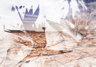
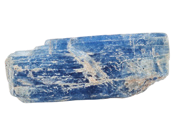
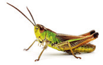

Explica qué es la biosfera y señala con qué otras capas terrestres se relaciona y de qué manera.
En las diferentes zonas de la Tierra, la variedad de especies también es muy distinta.
a. ¿Qué zonas son más ricas en variedad de especies?
b. ¿Cuáles son las más pobres?
c. ¿A qué crees que se deben estas diferencias?
Los organismos que pueblan nuestro planeta son muy diversos en forma, tamaño y complejidad. Busca varios ejemplos que confirmen esta afirmación e indica qué tienen en común todos ellos.
Las fosas oceánicas son formaciones geológicas que consisten en grandes depresiones en los fondos marinos. Algunas de ellas llegan casi a los 11 000 m de profundidad respecto al nivel del mar. Llevad a cabo un trabajo de investigación sobre el tipo de vida que se da en estas zonas de la corteza terrestre y comparídlo con el resto de la clase. Indica las fuentes consultadas.
¿En qué se diferencia un saltamontes de un mineral?
Investiga e indica qué alimentos son ricos en proteínas, ricos en glúcidos y ricos en lípidos. ¿Qué efectos sobre la salud tiene una alimentación desequilibrada? ¿Cómo se refleja esto en los países en vías de desarrollo? Cita las fuentes consultadas.
Elabora un resumen de las principales funciones que desempeñan los compuestos orgánicos: proteínas, lípidos, glúcidos y ácidos nucleicos.
¿Cuáles son los cuatro elementos químicos principales que forman parte de los compuestos orgánicos?
Corrige en tu cuaderno los enunciados incorrectos.
a. La materia orgánica está formada principalmente por los elementos oxígeno, silicio, aluminio y hierro.
b. Los compuestos inorgánicos son las proteínas, los lípidos, los glúcidos y los ácidos nucleicos.
c. Los elementos carbono y nitrógeno forman parte de la materia orgánica.
Copia en tu cuaderno y une con flechas.
Materia orgánica
Proteína
Oxígeno atmosférico
Agua
Azúcar
Sal común
Grasa
Una compañera de clase te dice convencida que un garbanzo es materia inorgánica. ¿Qué experimento le propondrías para demostrar que es materia orgánica?
Clasifica estos organismos en autótrofos y heterótrofos: caracol, roble, piteirio, salamandrea, alga, magnolio, champiñón y jaramago.
¿En qué te has basado para hacer tu clasificación?
¿Por qué se afirma que los organismos autótrofos y heterótrofos dependen unos de otros?
Uno de los nutrientes fundamentales que las plantas absorben del suelo a través de las raíces es el agua. Explica de qué manera podrías demostrar a tus compañeros que las plantas toman agua.

Paisaje desértico

Cristal de cianita azul

Saltamontes